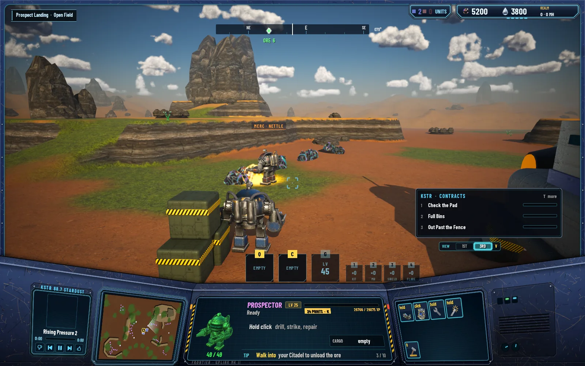
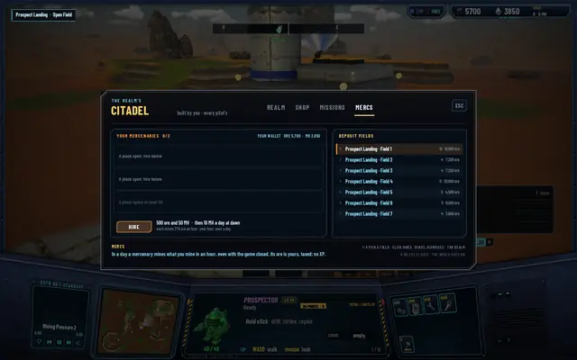
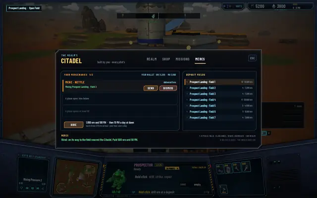
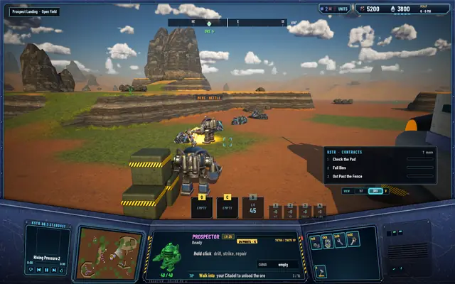
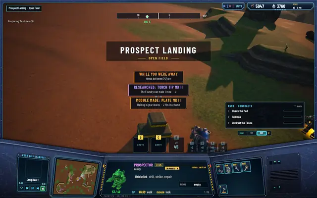

M8 · The realm under siege
Mercenaries: they mine while you sleep
The world now runs while the game is closed. So I asked for someone to work it: mercenary prospectors, hired at the Citadel, who dig your ore while you're away.

The Citadel's fourth tab is MERCS. On the left are your mercenaries; on the right, the region's deposit fields with the ore left in each. Pick a field, press HIRE, and a Prospector with a name over its head walks out to dig there, then hauls the ore home to the Citadel.
The rule I gave was simple: in a whole world day, a mercenary mines what you mine in an hour. At level 5 that is 4,860 ore a day. The ore is yours, and like any unload it pays the realm its 10%. It earns you no XP: leveling stays something you do yourself.
- 500ore and 50 MH for the first hire, doubling for each one after
- 5 + L/5MH a day in wages, paid at dawn
- 1 · 2 · 3mercenaries at levels 5, 15 and 30
Wages come out of your MH at every dawn. A mercenary who isn't paid leaves. You can send one to another field or dismiss it from the same tab.
They work with the game closed, because the world server keeps running, and if the Mac was off the server catches up the hours when it starts again. When you come back the game tells you what happened: WHILE YOU WERE AWAY, mercs delivered 747 ore.
Album · Hire, mine, come back

The MERCS tab: places for your mercenaries, and the fields they can work.
Nettle hired for 500 ore and 50 MH. The next one costs double.
MERC · NETTLE on the field.
Back in the game: the mercs delivered 747 ore, and the Lab and the Foundry finished their jobs too.


The mercenaries have a paint of their own, but it doesn't read well from a distance yet; that's a follow-up. The same task fixed a bug: the TAKE button on the missions board did nothing when clicked. The suites now stand at 467 core tests, 209 server tests and 71 network tests, all passing.